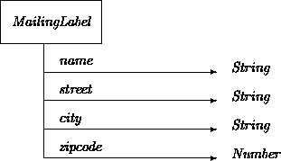
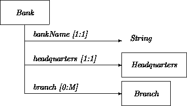

|
Chapter 17: Attributes in Design |
This chapter further details mechanisms for declaratively and computationally describing attributes, concentrating mainly on scalable in-the-small methods and concerns. We start by distinguishing types, qualifiers, and constraints within the context of ODL (feel free to skim these sections), and then discuss some strategies for designing concrete classes that meet these declarative constraints.
One way to conceptualize a value is as ``anything that may be passed along a wire''. Actual objects are not values. Computers cannot be squeezed through wires. However, descriptions of objects are values.
You can assume the existence of any set of value types you like. 1 We will use only a small number of value types, and thus maintain some contact with things that can be easily supported across a wide range of languages, tools, and systems. We restrict all low-level dependencies to the interpretation of state values within messages. (In heterogeneous distributed systems, these assumptions might be supported through the use of tools that interconvert message formats.) With only a bit of awkwardness, all class designs can be made independent of such details.
1Footnote:We predefine types bool, int, real, char, time, blob. The types of object links are also values. ``Void'', written as `` ()'' and perhaps best pronounced as ``synch'', is a reply type describing bidirectional operations that do not bear results. (We will also introduce named synchronization replies in Chapter 20.) We distinguish a time type to avoid commitments about its form (e.g., integer or real). We use literals such as 30ms and 2y3d as values. The strange type blob (a now-common acronym for Binary Large OBjects) is non-first-class type used only to refer to uninterpretable hunks of bits.
Including no types at all other than those describing links. See Chapter 20 for the mechanics.
We do not assume any particular bounds on numerical types. You may wish to do so, and could even tie them to common low-level constructs such as sixteenBitInt. But it is probably a better idea to express such things via constraints, and leave out the lowest level mappings until necessary.
Fixed sized vectors (arrays) of types are denoted using syntax type [ capacity ], where capacity is the number of elements; for example, an attribute name:char[20]. Elements are indexed starting at zero. The [...] syntax is analogous to that for generic classes. However, unlike similar ARRAY collections (Chapter 18), we take these vector types as pure values, without any underlying object structure. We use them almost exclusively to describe string constants. Literals of any char vector type may be indicated as quoted strings "like this".
Later in this chapter, we also illustrate a record (tuple) type used for structuring large sets of descriptions within messages. Messages themselves are in turn definable as value records.
We use value types extensively for describing and transmitting state information. But we do so within this very limited framework. We avoid the definition of, for example, sequence or set types. We will see how to define classes that obtain the desired effects. For example, to minimize implementation surprises, we reluctantly avoid even variable-length string types. A String class may be used in order to avoid the silly, horrible limitations of types such as char[20]. But we will postpone doing so for a while.
Classes describe families of related objects. But class information attached to object attributes does not refer to classes per se, but instead to connections to objects. The value of a link is the identity (ID) of the object on the other side of the link. You might think of an ID as some kind of pointer value. (It has been said that OO is the living proof that you can solve any problem by adding another pointer.)
In ODL we work only with typed IDs, meaning that a class membership must be specified whenever an ID is used. Since objects may conform to more than one class, this class specification need not be unique. It may declare a superclass of the most specific class describing the object. However, this declaration can then be used as a design-time safety measure to guide usage. Types are used as a convenient way of recording the assumed attributes and operations of an object on the other side of a link. Clients are generally restricted to only invoke operations that are listed in the class definition of the declared type.
As we will see, not every construct is statically checkable within the restricted framework of standard OO type systems. While this is a major hindrance at the analysis level, the use of simply checkable type signature information is a major asset at the design level. Types describe constraints in the most ``lightweight'' possible fashion and communicate them to other designers, thus reducing possibilities for design error. They enable partial mechanical coherence checking of designs. Situations in which simple checking fails alert designers to possibly fragile constructions. The same remarks hold for additional constraints, invariants, and effects. But here, prospects for mechanical checking are slim. Still, they make it easier to perform reliable concrete design, they are often easier to communicate to others than vague textual descriptions, and they help partially automate testing and other checks.
Objects themselves are considered to be either purely, magically primitive (e.g., BOOL) or purely composed of links to others. There are no in-betweens. This is essentially the Smalltalk [10] model of objects. To illustrate some differences between values and objects, consider introducing a class allowing the use of values in contexts demanding object types. For example:
class RealVal val: fixed real <> end
The main difference between a RealVal and a real is that an instance of RealVal has an identity. Two RealVals, r1 and r2 that both hold the val 3.14159 (so r1.val = r2.val) are still distinguishable via the test of whether r1 = r2. The value 3.14159 is the same no matter how many times you write it down (create an instance). But as cast in an object framework, each instance is detectably different. The fact that value types are ``unlocated'' is one reason we describe them as ``more abstract'' than objects. Value frameworks abstract over our definitional feature of objects (see Chapter 1) requiring that instances be uniquely identifiable.
The equivalents of enumerated types are intertwined with the ODL oneOf subclassing constraint. For example, instead of declaring an enumeration type voltageLevel with elements activeVoltage and ground, we might define:
class VoltageLevel fn level: real; end class ActiveVoltage is VoltageLevel inv level ~= 0.0 end class Ground is VoltageLevel inv level = 0.0 end inv VoltageLevel = oneOf(ActiveVoltage, Ground)
In ODL the C = oneOf(...) construct limits the subclasses of C to those in the list. It declares that the mentioned subclasses completely and exclusively cover the superclass. This is the ODL version of partitioning specifications (Chapter 7).
Restricting subclassability via oneOf trades off extensibility for precision and the ability to reason about cases. Only the listed subclasses may be defined. But this is often exactly what is needed and/or what an OOA model specified. Note however that even if a set of subclasses covers a type, each of these may be further subclassed. For example, ActiveVoltage could be subclassed into PositiveVoltage and NegativeVoltage. A set of classes that is exclusive but does not cover may be declared by defining an Other class, as described in Chapter 7. We do not use a special design notation for cases in which subclasses nonexclusively cover the superclass.
It is an easy matter to transform simple enumerations into this framework. Restricted class declarations contain all of the expressive power of enumerations, and more. Since they are classes, each of the ``enumerated elements'' may have additional properties, such as level in the current example.
Value and object types are used in defining fns. These constructs serve as the basic translation mechanisms for OOA-level attributes, and may be annotated with the following qualifiers. Qualifiers are descriptive restrictions. Their effects are not always mechanically checkable. For example, uniqueness of attributes normally cannot be checked by simple observation. Behind-the-scenes design rules and/or run-time processing are needed to ensure that duplicate values are not present across objects. Just listing the qualifier cannot generate these mechanisms automatically.
Outside of opt, ODL does not include multiplicity notation. Multivalued OAN attributes are translated using SETs or other collections described in more detail in Chapter 18.
The ``scope'' of any qualifier or constraint is that of the enclosing entity (including top-level, classes, and operations). In particular, qualifiers attached to op arguments, locals, and results apply per-invocation. For example, qualifying an op result as unique indicates that each invocation generates a unique result.
Constancy declarations lie at the intersection of several annotation constructs. For example, the following all have the same meaning:
votingAge: fixed int = 18; votingAge: common fixed int = 18; votingAge: fixed int; init votingAge = 18 votingAge: fixed int init= 18; votingAge: int; inv votingAge = 18 votingAge: int = 18;
The fact that an attribute cannot change aids later design and implementation. For example, when object link attributes are declared as fixed, this means that two or more objects bear an immutable, hard-wired relation to one another (see Chapter 18).
However, qualification must be done with care. There is a difference between the observation that an attribute does not happen to change, and the requirement that it logically cannot change. Applying fixed in the former case is a design error. It precludes declaration of perfectly reasonable subclasses in which the attribute could meaningfully assume different values, even if it happens not to in the superclass. On the other hand, failing to qualify an attribute as fixed when a class depends on its constancy is an easy way to generate inadvertent subclassing errors.
The best way to represent OOA-level uniqueness claims is to use ODL unique qualifiers. Parametric instances (Chapter 8) are explicitly unique. Other uniqueness claims are often explicit or implicit in OAN models. For example, a bank branch may have a mgr: unique Manager. Also, models may somehow claim or imply that a given object must be the sole member of a given class.
These issues come up in pure design contexts as well. A design may ensure that there is only (at most) one live instance of a particular class. For example, it may require that exactly one AccountNumberMaker object reside on a system. We mean ``require'' in the sense that correctness of the system as a whole can be guaranteed only if there are not multiple instances that may interfere with each other, as opposed to a (possibly better) design that will work OK if there is one, but also if there are more than one.
System-wide uniqueness may be indicated via top-level uniqueness constraints, and supported by the appropriate computational devices. For example:
class AccountNumberMaker
generator AccountNumberMakerGen
own id: Int <> init id? = 0
op newNumber: unique int { id.inc; reply id? }
end
class AccountNumberMakerGen
theInstance: opt AccountNumberMaker;
op mk: AccountNumberMaker {
if null(theInstance) then
theInstance := new AccountNumberMaker(id := new INT(0)) end;
reply theInstance }
end
theAccountNumberMaker: fixed unique AccountNumberMaker :=
AccountNumberMakerGen$mk;
Here, the generator class accepts the maintenance of uniqueness as its responsibility. However, there is a limit to the declarative specification of these matters. For example, we also should have claimed that Account Number MakerGen was unique. This leads to infinite regression. Ultimately, system construction policies must be invoked in order to ensure conformance. This is a general consequence of any kind of generator or metaclass framework. We may define generator-generators, generator-generator-generators, ad infinitum. At some point, correctness relies on disciplined usage of new.
In this example, we used unique at the Account Number Maker level to ensure that the results of each newNumber invocation were in turn unique. Our simplistic implementation required this tactic, since it had no other way of guaranteeing that the sequence numbers would not conflict with others. Similar considerations apply to other attributes and functions qualified as unique. Again, the easiest (and sometimes only) way to ensure uniqueness of values is centralization. Centralization is, in turn easiest to guarantee through the use of unique instances. Ultimately, uniqueness of instances is a system-wide construction policy issue.
The own qualifier for id is very useful in the Account Number Maker class. It claims that the Int component supporting the class is fully under the control of an Account Number Maker object. The component is unique to the instance. The link is never revealed to any other object, so no other object can modify it. The link is never rebound to a different component. To emphasize their hiddenness, we sometimes give owned objects names starting with underscores. Listing components as own is almost always the best way of translating ensemble constituents (Chapter 9).
In general, the more links that can be declared as own, the safer the design. Classes possessing only nonexported own links form decoupled communication-closed layered structures that are easier to reason about, implement, and reuse. In fact, non-owned links should be considered exceptional cases for ``elementary'' classes and attributes.
ODL attributes that are subject to redefinition and/or undefinition must ultimately be declared via binding rather than computational definition. Non- fixed attributes may be rebound to different values only by their owners. All opt attributes may be unbound using the common but deceptive, p := null. (This is deceptive because it makes null look like a value or object of some sort, which it is not. It is a dynamic multiplicity indicator.) Predicate null(p) is true if p is not connected. Optional attributes default to being unbound ( null).
There are two kinds of attribute constraints in ODL:
The ODL sublanguage used to specify invariants and initial conditions (as well as effects and other constraints) is somewhat limited. We call expressions involving state-preserving fns (attributes) inspections. We mandate that all constraints be expressed as read-only inspections. This ensures that we are not specifying transitions when we think we are just declaring properties. We need good reason to believe that constraints may be concretely checked in ways that do not unintentionally affect the states of the objects they describe.
Value inspections in inv and other constraints consist of the usual
boolean, relational, and arithmetic functions on values. We use
operators common to most programming languages, including ``~''
for not, ``/\'' for and, ``\/'' for
or, `` =>'' for implies, and ``~='' for not
equal (``/\'' and ``\/'' are treated as
short-circuiting). Also, series of expressions inside constraints may
be separated by commas, denoting conjunction ( and).
Comma-separation is usually more readable because of lower precedence.
Inspections may also contain if constructs and references to
other functions.
Among many other applications, constraints may be used to help declare state discriminators that are based on particular settings or combinations of other attributes. It is useful to define each such state mentioned in analysis models as a simple boolean fn of the same name that is true when the object is in that state. For example:
class Account ... currentBalance: real; overdrawn: bool = ( currentBalance < 0.0 ); end
These functions may take arguments, as in:
class Lamp ... fn hasStatus(b: bool): bool = ( on = b ) end
It is often appropriate to declare them as top-level functions. For example:
fn bothOn(a: Lamp, b: Lamp): bool = ( a.on /\ b.on )
When applied to links, `` ='' is the identity comparison operator, telling whether two links are connected to the same object. The fact that we can test whether any two links refer to the same object means that every object in a system must have a different identity.
Thus, there is no logical need to declare ``id numbers'' or other unique keys as properties (e.g., accountNumber in class Account). However, we will often still do so, in part for pragmatic reasons. Unless the system will live in a 100% self-contained object-oriented environment, it will sometimes need to interact with other database packages, communications services, and the like that do not understand or preserve object identity and thus require that some kind of ``manual'' identification strategy be used. This occurs even when interacting with foreign OO systems that use different identity representation schemes than those in the target system implementation. In such cases, we will need to veil pass-by-participation under pass-by-description protocols. Manual identification schemes are well suited for such roles. Using those that have already been specified by OOA models avoids having to create them artificially. Also, per-class identifiers are substantially easier to maintain as unique than global ones.
Comparing two links with `` ='' only tests whether the links refer to the same object. It is an error to use an identity test to discover whether two possibly different objects both provide some service or share some state characteristic. However, if you want a function saying whether two objects have the same descriptive features, then you will have to write it yourself. We cannot predefine these. It is very common to only want to count selected features (e.g., keys) when testing for state equality. In fact, it is often necessary to write families of equality functions reporting equality with respect to various criteria. For example, there might be a function sameCoordinates to test that two points have the same x,y values, and a function sameColor to test that they have the same displayed color, and perhaps a function SameCoordinatesAndColor, and so on.
State equality is in the eye of the beholder in designs with subclassing. For example, two instances of a class Point that does not declare a color attribute could only be equal with respect to coordinates. Two objects of subclass ColoredPoint could be equal with respect to any of these three functions. A Point compared against a ColoredPoint may be equal with respect to coordinates, but not others. You need to know which sense you mean in any particular case. A good ounce of prevention is never to define a function just called equal. There are just too many senses of ``equal'' for one function to represent. Similar remarks hold for lessThan and other functions that compare two objects.
Attributes in concrete classes must be defined via either binding or computation. The choice is made in ODL by either listing an attribute as `` <>'', meaning that the value must be bound at construction, or defining it in `` {...}'' brackets, meaning that it is computed.
Bound (or ``stored'') attributes differ from computed ones in that they may be rebound (if non- fixed) and/or unbound (if opt). For simplicity and conformance to most implementation languages, we require that computationally defined attributes and operations not have their definitions rebound, unbound, or otherwise dynamically modified. The only way in which their values may change over time is by internally accessing properties of one or more mutable objects. The effects of rebinding may be had in this way, but the logistics are a bit harder.
Of course, ODL supports the usual if, while, etc., statements needed to evaluate concrete attributes. You can declare local objects, conditionals, loops, and so on. Because we push OO conventions down to the bottom, operations on simple integers, etc., look more like those in other languages that uniformly distinguish values from objects (e.g., ML and forth) than procedural code. This is an acquired taste at best:
op factorial(n: int): int {
local f: Int := new INT(1);
local i: Int := new INT(n);
while i? > 0 do f.mul(i?); i.dec end;
reply f? }
ODL local value fns may be used to provide a more conventional veneer:
op factorial(n: int): int {
local f: int := 1;
local i: int := n;
while i > 0 do f := f * i; i := i - 1 end;
reply f }
The mechanics of stored links differ from those of stored value attributes. Stored links may be represented transparently as ``slots''. For example:
class Elevator ...
local door: ElevatorDoor <> % stored
doorButton: DoorButton { door.button } % computed
op replaceDoor(newDoor: ElevatorDoor) % rebind
{ door := newDoor }
end
The same declaration patterns hold for value attributes:
class Elevator ...
isMoving: bool <> % stored
doorOpen: bool { door.isOpen } % computed
op move { isMoving := true; ... } % rebind
end
However, any non- fixed stored value attribute depends on some kind of object to maintain state information. As a default mechanics-level strategy, we assume that stored value attributes expand into functions that access (via `` ?'') and reset (via set(val)) the states of automatically defined objects of corresponding types (e.g., Bool objects for bool values). The underlying links are given the same names as the functions, but with a leading underscore. For example, the listed declaration may be treated as if it were:
class Elevator ...
own _isMoving: Bool <>
isMoving: bool { _isMoving? }
op move { _isMoving.set(true); ... }
end
Alternatively, updates could be performed by binding the links to fresh objects with the indicated initial values; it does not much matter. In any such scheme, ``stored'' value attributes are provided with computational definitions referring to underlying objects. These links may be initialized in constructors via explicit binding or, by convention, implicit linkage to a new object of the corresponding default concrete subclass:
class ElevatorGen ...
op mk: unique Elevator {
reply new Elevator(isMoving := false ...) }
end
The net effect of these conventions is to allow value attributes to appear to be ``directly represented'' within objects whenever it is convenient to do so. However, by making these conventions explicit, we also facilitate bindings of values to ``smarter'' objects when necessary. For example, isMoving might instead be defined to extract the value of an object of a special subclass of Bool that shadows state changes on persistent media or notifies an indicator lamp object when its state is changed. The ideas may be scaled to any value-like attribute type.
Because computational definitions may not be rebound or unbound, opt attributes must be defined through binding, not computation. For optional value attributes, this requires similar representational maneuvering. We do not specify a default strategy.
There are many ways to declare and represent optionality that might make sense in particular cases. These may be defined manually. For example, an optional attribute might be transformed to two fns; attr:A to hold the value, and hasAttr:bool to tell whether it is logically bound or not. Alternatively, an int attribute that should logically never be negative may be given a negative value to indicate unboundedness.
Both our analysis models and our design-level constraint annotations treat attributes such as aBool.val and aLamp.on as ``directly'' sensed and knowable both within and among objects.
In software, generally, the only way for one object to determine the state of another is to ask and be told. Thus, in design, a value attribute is construed as a ``function call''. In this way, information that looks ``static'' in analysis must be communicated via simple dynamics. For example, the on value in Lamp objects is obtained by invoking val for the switch component, ultimately obtaining a value. Objects even ``ask themselves'' what their states are. Essentially all software objects are ``reflective'' and ``self aware'' at least in this limited sense. We exploit this more in design than in analysis.
Even though we must handle this information dynamically, it is vitally important to maintain the implicit assumption that an object's listed attributes may be determined without otherwise disrupting the object. Doing otherwise would mean that the logical state of an object would change in the act of ascertaining it. Any design that includes such actions has low a priori chances of being correct.
This leads to the design rule that the concrete definitions of state sensor functions (attributes) cannot ever cause state changes visible from other potential client objects. In other words, they must be state-preserving, in a somewhat stronger sense than the otherwise similar notion of service transitions. They must behave as if no transitions are performed at all.
However, to be picky, concrete fns are never computationally pure. They induce ``microstates'' in objects while computing and returning answers to function queries. Our design rules boil down to the requirements that the computational necessity of these microstates should never impact abstract functionality (see Chapter 19).
Note that ``state preservation'' is defined with respect to descriptive information. Concretely defining a function to perform some internal processing that could never have any effect visible to other objects is consistent with this view, although intrinsically slightly dangerous. A classic example is a Point implementation that uses standard rectangular coordinates for internal representation, but also caches the values of its polar coordinates whenever asked so that it may more quickly report them if asked again.
Objects such as MailingLabels simply maintain several loosely related attributes. The classes consist of set/get interfaces, with a value reporter and a value replacer operation for each property listed in the analysis model:

class String80 s: char[80] end class MailingLabel name: fixed String80; street: String80; city: String80; zipcode: int; op setStreet(newSt: String80) ==> street' = newSt end op setCity(newC: String80) ==> city' = newC end op setZip(newZ: int) ==> zip' = newZ end end
Concrete versions are most often constructed by hooking up attributes to more primitive objects that provide the required functionality. A simple default-strategy class is:
class MailingLabelV1 is MailingLabel
name: fixed String80 <>
street: String80 <>
city: String80 <>
zipcode: int <>
op setStreet(newSt: String80) { street := newSt }
...
end
op mkMailingLabelV1(n: String80, s:String80, c: String80, z: int):
unique MailingLabelV1 {
reply new MailingLabelV1(name:=n, street:=s, city:=c, zip:=z) }
Manual control over internals may obtained in a tedious but straightforward fashion:
class MailingLabelV2 is MailingLabel
own _name:Name <>;
own _street:String80 <>;
own _city:String80 <>;
own _zip:Int <>
name: String80 { _name? }
street: String80 { _street? }
city: String80 { _city? }
zip: String80 { _zip? }
op setStreet(newSt: String80) { _street.set(newSt) }
...
end
op mkMailingLabelV2(n: String80, s:String80, c: String80, z: int):
unique MailingLabelV1 {
reply new MailingLabelV2(
_name := new NameV1(_nm := new STRING80(n)),
_street := new STRING80(s),
_city := new STRING80(c),
_zip := new INT(z)) }
Here, we have assumed the definition of a little Name class that holds char[80]'s for use as names, perhaps also supporting operations for finding middle initials, etc. We could have created similar classes for the other components.
Similar translations may be applied to most of the OOA class descriptions from Chapter 3. For example, the Bank class:

class Bank bankName: String80; local headquarters: Headquarters; local branch: SET[Branch]; end
We used the default visibility commitments here. We listed the headquarters and branch attributes as private links and the name as a public attribute. In this abstract version, we avoid computational and representational commitments. A corresponding concrete class can nail this down, perhaps as:
class BankV1 is Bank
bankName: String80 <>
local headquarters: Headquarters <>
local branchInfo: BranchInfo <>
local branch: SET[Branch] { branchInfo.getBranches(bankName) }
end
A general term for a class that renames or exports restricted properties of another is a view. By adding renaming-based views, a concrete class may be repackaged to obey a variety of abstract interfaces expected by different clients. Views are often employed as retrospective techniques that allow already-existing components to be used in new ways.2 Among the most common applications is to create a secondary interface for one or more classes to remove incompatibilities with other software. For example:
class DB_CompatibleAccountV2 is DB_CompatibleAccount ...
local acct: Account;
num: int { acct.acctNumber }
op add(amt: Cash) { acct.credit(amt) }
end
2Footnote:
More formally inclined readers might notice that views provide a way to define arbitrary homomorphisms among classes, albeit in a ``second-class'' fashion. We have no way of expressing the abstract properties of these homomorphisms.
We have created a view simply in order to rename properties and operations to those expected by some other clients. Renaming-based views are among the best means of supplying ``glue'' that allow classes developed for different purposes, or obtained from different libraries, to be used together.
Unrestricted views may be created to allow use of values in contexts demanding object types. We used this tactic earlier in defining the RealVal and String80 classes.
More importantly for present purposes, views provide mechanics to restrict, protect, and package components to meet abstract constraints on host attributes. Thus they serve as vehicles to implement forwarding and encapsulation properties of both OOA-level ensembles and the smaller ensemble-like classes that pervade design.
Our predefined value-maintaining classes ( Int, Bool, Real Char) possess all of the usual update operations ( set, add, etc.) definable for objects maintaining the corresponding values.
Some of these operations may be nonsensical when predefined object types are used in support of new classes. It is necessary to think through the legal and meaningful operations that are supported, even (or especially) for simple property-holding classes. Classes holding values with restricted operations may be defined manually by listing the operations in full.
For example, we may wish to restrict objects representing account balances to have a current dollar value that is initially zero, and to limit operations to those that add and subtract other values to the current value (corresponding to deposits and withdrawals), as well as to adjust by a multiplicative constant (in order to add interest and the like). ``Looser'' and/or inappropriate operations (e.g., set, div) need not be supported. This could be expressed abstractly as:
class Balance val: real init= 0.0; op add(c: real) ==> val' = val + c end op sub(c: real) ==> val' = val - c end op mul(r: real) ==> val' = val * r end end
A concrete class may be defined as a view of a built-in class:
class BalanceV1 is Balance
own _val: Real <>
val: real { _val? }
op add(c: real) { _val.add(c) }
op sub(c: real) { _val.sub(c) }
op mul(r: real) { _val.mul(r) }
end
The definition of a class such as Balance mostly serves to protect against accidental misuse, not abuse. For example, it is possible for another object to reset a balance to a completely different value by first subtracting out the current value, and then adding in a new one. However, if nothing else, the restricted constructs advertise standard usage and practice.
The descriptive value types defined in our basic framework do not provide any ``active'' protection for maintaining constrained, structured, or interdependent properties; for example, the fact that a probability value must be between zero and one. Views provide a locus for the infrastructure necessary to ensure that simple values and states stay within prescribed restrictions.
State values may be constrained by creating and using a class describing immutable objects. Such a class consists only of fns describing fixed (or otherwise constant) attributes, along with invariants among them. Because there is no way to change the state of such objects, they have the same pragmatic role in transmitting state information as simple values. For example:
class ProbabilityValue
val: fixed real; inv 0.0 <= val, val <= 1.0
end
class ProbabilityValueV1 is ProbabilityValue
own _val: Real <>
val: real { _val? }
end
For objects that do not change state, it is obviously crucial to get their construction right. An abstract generator interface and appropriate subclasses might be defined as follows. We intentionally skirt error processing for now, and simply use a value of zero if the argument is out of range in mk:
class ProbabilityValueGen
local fn inRange(r: real): bool = (0.0 <= r /\ r <= 1.0);
defaultProb: real init= 0.05;
op setDefault(r: real) when inRange(r) then defaultProb' = r else end
op mk(r: real) q: unique ProbabilityValue
when inRange(r) then q.val = r else q.val = 0.0 end
op dflt q: unique ProbabilityValue ==> q.val = defaultProb end
op clone(p: ProbabilityValue) q: unique ProbabilityValue
==> q.val = p.val end
end
class ProbabilityValueV1Gen is ProbabilityValueGen ...
op mk(r: real): unique ProbabilityValueV1 ...;
end
Similar techniques apply to stateful classes. For example, a mutable Probability class and associated utilities may be defined as follows. To again postpone error handling issues, we make things easy for ourselves by failing to require any action when numbers are out of bounds.
class Probability
val: real;
local inRange(x: real): bool = (0.0 <= x /\ x <= 1.0);
inv inRange(val)
op set(r: real): () when inRange(r) then val' = r else end
end
class ProbabilityV1 is Probability
own _val: Real <>
local inRange(x: real): bool { 0.0 <= x /\ x <= 1.0 }
val: real { _val? }
op set(r: real) { if inRange(r) then _val.set(r) end }
end
op copy(dest: Probability, src: Probability) { dest.set(src.val) }
class ProbabilityGen op mk ...; end
A different concrete design strategy is to construct a class that rebinds a ProbabilityValue on each set:
class ProbabilityV2 is Probability
local p: ProbabilityValue <>
val: real { p.val? }
op set(r: real) { if inRange(r) then p := ProbabilityValueGen$mk(r) end }
end
This ``write once'' strategy guarantees that bottommost entities are never mutated. Links are instead rebound to fresh immutable objects. This sometimes simplifies their management.
Value and operation restrictions may, of course, be combined. For example, if a savings account balance should never be negative, this could be reflected in an associated class:
class SavingsBalance ...
val: real; inv val >= 0.0
op sub(c: real)
when c <= val then val' = val - c else % error % end
end
These strategies provide more understandable, safer, and better encapsulated class definitions than ones supporting set and get interfaces to read and write values. Rather than just giving in at this lowest level and treating value-maintaining objects as read/write ``variables'' in the procedural programming sense, it pays off to model them like any other object, in terms of required properties and transitions. In practice, OOA models rarely do this, so the task is left to design.
Consider a class that provides a view of a single operation on a single object in order to give it different characteristics. For example, suppose for some reason we need to use a Lamp object, but instead of invoking flip, we would like to just call it call. We could do this with a little view class:
class LampWrapper
local l: Lamp <>
op call: () { l.flip }
end
...
wrapper := new LampWrapper(l := myLamp);
wrapper.call;
Given just this example, it may be hard to believe that classes such as LampWrapper turn out to be useful technical tools. Wrappers are perhaps not the most intuitive OOD construct, but they are among the most versatile for technical manipulations. It is easy to generate them automatically. First define abstract class:
class Wrapper op call: (); op send; end
For convenience, we provide both a blocking ( call) and one-way ( send) version of each, so clients may use either form. In ODL we define a macro 3 WRAP that defines an appropriate subclass and also instantiates a corresponding instance.
3Footnote:For example:
Macros are tiny software development tools expressible inside a language. Our macros might be replaced either by external tools or by adding corresponding syntax to the language per se. Some constructs that we describe as macros might be considered ``basic'' in other systems, and vice versa. Also note that many of our macros are very smart. We make no claims that they are implementable via text replacement mechanisms.
wrapper := WRAP(myLamp.flip);
automatically generates something like the following.
class Thunk9063 is Wrapper
local object: fixed Lamp <>
op call: () { object.flip }
op send { object.flip }
end
wrapper := new Thunk9063(object := myLamp);
When we are using classes as tools for organizing attributes, constraints and operations, their definitions tend to be focused on computational matters rather than properties and descriptions. But not a lot can be said about a wrapper. Every concrete subclass of Wrapper does something completely different when call is invoked. This makes it harder for wrapper users to predict effects of invocations. For this reason, more rigidly specified view classes are preferable to wrappers whenever something more can be said about operations.
But in a different sense, wrappers enhance design safety. A wrapper user cannot get at any of the other operations the underlying object may possess, and thus cannot generate unexpected message sequences. In this way, wrappers serve as pure ``operation ports'' that are untied to particular objects. One difference between OOD and other distributed processing frameworks is that in OO, object links are basic and operation ports are derived, while in otherwise similar systems such as Hermes [16] , something close to the opposite holds. This style may be emulated using wrappers and views.
Objects should not export links to other objects as public attributes or as arguments or results of other operations unless it is logically necessary to do so in order to enable further communication.
It is both an abstraction error and a pragmatic invitation for disaster for an object to return a link to a helper object when it is asked simply to report the value of some attribute. If identities are never revealed to other objects, then others cannot (directly) send them inappropriate messages.
Consider, for example, a Square class built using Points:
class Point x: real; y: real; op shiftX(v: real): () ==> x' = x + v end op shiftY(v: real): () ==> y' = y + v end end
class Square
local lowerLeft: Point;
local upperRight: Point;
inv upperRight.x > lowerLeft.x,
upperRight.x - lowerLeft.x = upperRight.y - lowerLeft.y
op shiftHorizontally(offset: real): ()
==> lowerLeft.x' = lowerLeft.x + offset end
end
This class contains no provisions for other objects to determine the coordinates of the square. Clearly, some are needed. The wrong way to do this is:
class BadSquare ...
lowerLeftPt: Point { lowerLeft }
end
op abuse(s: BadSquare) { s.lowerLeftPt.shiftY(1000.0) }
The client ( abuse) changed the lower left point in a way that almost surely broke the squareness invariant. Moreover, this construction is conceptually wrong in this context. The identity of the lowerLeft point is not the value of the attribute. In fact, since it is not listed as fixed, the link might sometime be rebound to a different Point object that still maintains the listed invariants. The attribute function should instead reveal the indicated logical state information, not the helper object itself. There are several ways to do this.
A simple but sometimes tedious approach is to expand out and forward all relevant value attributes. This is the same technique seen in Chapter 9 for exposing partial transition networks for constituents. For example:
class Square_2 lowerLeftX: real; lowerLeftY: real; upperRightX: real; upperRightY: real; inv upperRightX > lowerLeftX ... end
A concrete class could still use Point objects internally:
class Square_2V1 is Square_2 ...
own lowerLeft: Point <>
lowerLeftX: real { lowerLeft.x }
end
The argument (rather than attribute/result) version of this is to parameterize operations to receive a set of value parameters that transmits the state information. The receiver might use this information to make a local copy of the object, and work off that:
op moveCursor(xcoord: real, ycoord: real) {
local p: Point := new PointV1...; ... }
class SquareV2 is Square ...
op moveToLowerLeft {
moveCursor(lowerLeft.x, lowerLeft.y) }
end
Tedious attribute-by-attribute forwarding may be replaced with aggregate description records that transmit all relevant information about objects in a more structured fashion. In ODL we use an immutable record framework for such purposes:
record pointDescription(xcoord: real, ycoord: real);
class Point2 is Point
xc: Real; yc: Real;
x: real { xc? } ...
fn description = pointDescription(x, y);
end
class SquareV3 is Square ...
own lowerLeft: Point <>
lowerLeft: pointDescription { lowerLeft.description }
end
In ODL, records have the same form as messages themselves. They are used only to simplify and structure message transmissions. If it is necessary to hold or manipulate them, then corresponding objects and their classes must be defined.
Definition of description functions across classes in a system can be an effective preliminary step in establishing mechanisms that save descriptions of objects on persistent media (see Chapter 22). They also help standardize the forms of state descriptions that are decoded into objects by receivers. For example, a Square class may itself support:
record SquareDescription(ll: PointDescription, ur: PointDescription);
class SquareV3b is Square ...
description: squareDescription =
squareDescription(lowerLeft.description, upperRight.description)
end
These may be even further standardized to achieve compatibility with external software. For example, descriptions could be structured according to the ASN.1 [15] standard.
Another common solution is to return copies (clones) of internally held objects. For example:
class PointV3 is Point
xc: Real; yc: Real;
x: real { xc? } ...
end
class SquareV4 is Square ...
lowerLeftPt: unique Point {
new PointV3(xc := new REAL(lowerLeft.x),
yc := new REAL(lowerLeft.y)) }
end
Sending copies as arguments to other operations can be an effective way of avoiding situations where clients try to send messages via links obtained as arguments. The two-sided version of this protocol is copy-in/copy-out passing in which the server sends back a newly created object that the client may then bind.
The difference between copy-based protocols and simply exporting links is that even though the original and the copy have the same state, they are not the same object. Receivers cannot depend on messages to these copies having any consequences with respect to their originators. This is one way of interpreting our conventions for passing pure values. Even though passing a real might ultimately be implemented using a local REAL object, the receiver knows that it cannot exploit this object's identity.
An intermediate solution is to construct read-only views of exported objects. For example (collapsing abstract and concrete versions of classes for the sake of brevity):
class PointVal
locals _x: Real <>; _y: Real <>; end
x: fixed real { _x? }
y: fixed real { _y? }
end
class Point3 ...
own xc: Real <>; own yc: Real <>
coordinates: PointVal { new PointValV1(_x := xc, _y := yc) }
end
class Square5 ...
own lowerLeft: Point3 <>
lowerLeftPt: PointVal { lowerLeft.coordinates }
end
Since lowerLeft is never rebound in Square5, the attribute functions of PointVal views will always report the current values, not just those that held at the point of construction. Yet objects that hold these views are unable to modify them. Views thus serve as capabilities. Objects holding views may perform only those operations that are forwarded out. It is easy to generalize this scheme to provide views of any subset of properties, not just status attributes. For example, a view could be constructed to only allow clients to modify x coordinates, not y. These capabilities/views may even be constructed and managed by a central service.
While it is a bad idea to export links as stand-ins for attributes, objects may sometimes send local links to other helper objects in the course of operations. It is for this reason that we have not ``syntactically'' mandated that own links not be exported. We will in further discussions merely assume that a no-export policy or its equivalent is maintained.
``Equivalent'' here means that objects may well send out own links as arguments to other ``trusted'' helper functions, operations, and objects that responsibly assist in their maintenance without further exporting them or interfering with other operations. Pure inspection fns may always be invoked in this way. While intrinsically somewhat dangerous, other exports are occasionally difficult to avoid.
Trustworthiness of helpers is another way of talking about their correctness with respect to a given need and context. For example, a Balance object might delegate interest updates to an InterestMgr via the message im.update(_val). The decision to export own link _val represents a measure of trust that the operation performs the intended service. If this sense of safety and correctness of a helper is not ascertainable, then more conservative measures are called for. Adaptations of other standard measures are available. Among other possibilities, the Balance object could send a clone of the _val, and later copy the state of the clone back to _val. Alternatively, the InterestMgr::update operation could be recast to receive and return values. The clients themselves may then update the appropriate objects. A more extreme option is for the Balance to perform all interest computations itself. However, this needlessly duplicates the functionality of InterestMgr and adds to the complexity of the Balance class.
Measures based on the safety and correctness of individual operations suffice for localized, small-scale use. Unlike most methods described in this chapter, they do not always scale well. We describe more extensive and ``heavyweight'' measures ensuring safe exclusive control over arbitrary exported linked objects in Chapter 22.
Especially when attributes are in any way hidden, exceptional interaction conditions often may be avoided by exporting ``screening functions'' in addition to status indicators.
Some operations contain when conditions that refer solely to unchanging properties of their arguments. To avoid exceptions, clients should be able to determine whether the arguments they intend to send are indeed legal. Illegal cases may include out-of-range numerical values, unbound opt links, and objects that do not obey inv constraints with one another. To prevent clients from sending bad arguments, receivers may provide them with the means to determine themselves whether they are OK. Objects may advertise preconditions by exporting guard screening functions that clients may invoke before committing. This pulls responsibility for dealing with errors up one level from the receiver to the sender:
class Probability ...
fn inRange(x: real): bool { 0.0 <= x /\ x <= 1.0}
end
op user(p: Probability, r: real) {
if p.inRange(r) then p.set(r) else ... end }
However, even with such arrangements, the operations must still contain exception mechanics (see Chapter 20) unless all clients obey the protocol. This may be enforced by design rules and tools. Another way to assign responsibility for value argument screening is to phrase arguments in terms of simple constrained value-holding classes. This localizes most error situations to those surrounding (failed) object construction, which is sometimes a more convenient base for defining error protocols than elsewhere.
We have so far in this chapter focused on compositional layering mechanism to form concrete classes that obey declarative constraints. Subclassing strategies provide both extensions and alternatives.
The most important intuitive guideline for subclassing at the design level is substitutability. It must be possible to substitute a subclass instance everywhere a superclass type is listed in a system, and still have everything operate correctly with respect to superclass guarantees. Hence, as described in Chapter 7, it is OK for subclasses to add or strengthen properties listed in the superclass, but never to delete, contradict, or weaken them.
Subclassing is, of course, the natural technique to employ when a class requires extended rather than restricted views of primitives. For example, in later chapters we will need versions of simple classes that may be lockable, may notify other objects when they change state, and so on. In some applications (see Chapter 22) nearly every class should contain one or more standardized notification protocols. These may be defined in a familiar fashion. For example:
class ShadowedReal is Real local db: PersistentStore; local op notifyOfChange ==> db.notify(self, val)'' end op set(r: real): () ==> val' = r, notifyOfChange' end end
It is very common for one concrete class to be a subclass of some abstract class, and additionally to share internal strategies with another related concrete class. This provides an opportunity to pit the compositional designs we have so far been using against multiple inheritance designs. For example, consider an Adjust able Lamp class:
class AdjustableLamp is Lamp brightness: real; op adjust(delta: real) ==> brightness' = brightness + delta end end
One way to construct a concrete class Adjust able LampV1 is as a subclass of Adjust able Lamp that happens to contain a LampV1 as an internal component to which it delegates most properties and operations:
class AdjustableLampV1 is AdjustableLamp % composition
own l: LampV1 <>
own br: Real <>
on: bool { l.on }
op flip { l.flip }
brightness: real { br? }
op adjust(delta: real) { br.add(delta) }
end
A second version says that Adjust able LampV2 is both a concrete subclass of Adjust able Lamp and also an ``extension'' subclass of LampV1, since it employs the same kinds internal components and adds one more:
class AdjustableLampV2 is AdjustableLamp, LampV1 % concrete inheritance
own br: Real <>
brightness: real { br? }
op adjust(delta: real) { br.add(delta) }
end
This second sense of inheritance, concrete subclassing, is the most common form of inheritance employed in object-oriented programming. It is a simple way to combine the effects of compositional design with abstract subclassing, thus adding to the innumerable ways to express PartOf.
Concrete inheritance can also lead to more concise class descriptions than does the manual combination of composition and property inheritance. Listing delegations in a composition-based strategy is tedious and inelegant looking. To remedy this just a bit in ODL, we use a macro FORWARD(obj) that declares forwarders for all operations supported obj, and a parameterized version that forwards only the indicated operations. (We describe some further variants in Chapter 22.) For example:
class AdjustableLampV1 is AdjustableLamp ... l: LampV1; FORWARD(l, on, flip); end
In the remainder of this section, we survey issues leading us to downplay the use of concrete subclassing for many design problems.
class AdjustableLampV1a is AdjustableLamp ...
l: Lamp <> % not LampV1
end
op mkAdjustableLampV1a: unique AdjustableLampV1a {
reply new AdjustableLampV1a(l := LampGen$dflt, br := new REAL(0.0)) }
This level of decoupling is impossible with concrete subclassing. Our Adjust able LampV2 class must always use exactly the same representation as LampV1.
class A
op middle { }
op m { print(" begin "); self.middle; print(" end ") }
end
class SubA is A
op middle { print(" middle ") }
end
Here, (new SubA).m prints `` begin'' `` middle'' and `` end'' (although perhaps not in this order, since they were defined as one-way sends in this example). This is because the self-invocation to middle in A::m is taken to refer to the currently overridden version, not the one in A. In OO systems, the class identity of self is defined to covary with the subclass being declared. The effects are most noticeable when self-referential computations are invoked.
It is easy to define such recursive invocation structures using subclassing. However, the same effects may be obtained in a sometimes clearer fashion via explicit layering. Here, a new layer may be created simply by redefining m as a top-level operation. It need/should not know anything about how the parts work, just how to coordinate them. While we are at it, we could break out a slightly better interface:
class AA
op pre; op middle; op post;
end
op m(a: AA) { a.pre; a.middle; a.post }
class A is AA
op middle { }
op pre { print(" begin ") }
op post { print(" end ") }
end
class SubA is AA
a: A; FORWARD(a, pre, post);
op middle { print(" middle ") }
end
Probably the most common cases where inner operations appear most natural are default scripted actions listed in superclasses. Like m here, these default actions are intrinsically coordination-based, defining higher-level operations as scripts of more primitive class operations, each of which may be redefined in subclasses. However, layering these scripts on top of classes rather than within them generally leads to more extensible designs.
Consider a slight recasting of our lamp example, this time using the mixin class Adjust able. This class provides independent functions for adjusting magnitudes, untied to Lamps:
class Adjustable magnitude: real init= 0; op adjust(delta: real) ==> magnitude' = magnitude + delta end end class AdjustableLamp_2 is Adjustable, Lamp end
Classes such as Adjust able are nearly useless by themselves, but readily combine with others to form new specializations. Mixin-style multiple inheritance, like all multiple inheritance designs, is simplest when the properties described in each class are completely independent from those of the others. In these cases, simple composition suffices to create concrete versions:
class AdjustableLamp_2V1 is AdjustableLamp_2 own adj: Adjustable <>; own l: Lamp <>; FORWARD(adj); FORWARD(l); end
A similar version using concrete subclassing for either or both ancestors would run into the same issues as simple concrete inheritance. Moreover, when multiply inherited properties do interact, it is generally necessary to handcraft special versions of relevant operations. For example, if adjusting the magnitude down to zero should automatically turn off the lamp, this interaction would need to be hand-crafted (perhaps using notifications between adj and l; see Chapter 22).
Black-box composition is generally a safer strategy than either concrete composition or concrete subclassing. The new class uses the other as a mere component, so it has no special privileges to any internals. This makes it impossible for the new class to redefine things in ways that inadvertently break invariants.
Further, both layered composition and subclassing may be distinguished from forms of differential design in which bits and pieces of definitions in one class are reused and reworked in white-box fashion in another. These do not usually coincide. When they do not, neither disciplined subclassing nor composition is appropriate. However, pragmatic concerns make it very tempting to abuse one of these techniques.
In a sense, the right tool for this job is cut-and-paste reuse, in which definitions from one class are lifted and edited for use in another. However, the disadvantages of such practices are obvious. Among other problems, if the original version is discovered to be incorrect, it becomes very difficult to trace all of the others that are equally wrong.
There is a good solution, adopted in several OO languages. A design and programming system can itself facilitate and control white-box reuse-with-modification by providing a means for logically cutting and pasting the internals of one concrete class inside another, along with the convention that definitions mentioned as different in the new class replace those in the other. (A nearly equivalent strategy is used in languages (e.g., POOL [3]) that explicitly maintain two separate kinds of inheritance hierarchies, one for properties, and the other for reused code.)
For example, suppose we need to design a lamp that only has two brightness settings:
class DiscretelyAdjustableLamp is Lamp
brightness: int;
op adjustUp ==> brightness' = 269 end
op adjustDown ==> brightness' = 54 end
end
class DiscretelyAdjustableLampV1 is DiscretelyAdjustableLamp
opens AdjustableLampV1
op adjustUp { br.set(269) }
op adjustDown { br.set(54) }
local op adjust(delta: int)
end
The opens clause says that the listed parts of the class(es) are logically copied into the current declaration (subject to overrides) without saying anything about subclassing relations. It need only be used when performing white-box reuse that mangles the internals of the other class in a way that does not preserve subclassing relations. This was done here because the AdjustableLampV1::adjust operation does not deal with absolute settings, only relative ones. There is no other direct way to unconditionally set the brightness to a particular value. Also, since the adjust operation is not a part of the DiscretelyAdjustableLamp interface, it is redeclared as local. (This is safer than deleting it outright.)
The advantages such facilities are mainly (and importantly) managerial. They have the same effects as cut-and-paste-and-modify, but help track modifications by linking constructions to their ultimate sources. This ensures that if a definition is changed, the effects are felt in all other classes that use it.
These methods do not introduce object access issues. The opened objects themselves are not being accessed, just their declarative and definitional structures. Similarly, invariant and effect information found in the opened class cannot be reused. Usage is limited to concrete characteristics.
The whole idea of white-box reuse is to modify component and subcomponent code to do things they were never intended to do. When either pure composition or pure subclassing suffice, they are far better options. The hard work, guarantees, tests, and so on that others have already put into the design of these components may then be exploited.
For example, in the present case, a DiscretelyAdjustableLampV2 class could be constructed to use a AdjustableLampV1 as a component, while additionally keeping track of the current brightness settings via other attributes. In this way, it can send the appropriate value to adjust to implement adjustUp and adjustDown. This layering might or might not lead to a slower implementation. If it does, encapsulation boundaries may broken in a more thoughtful way in later design steps dealing explicitly with performance issues (see Chapter 25).
Being careful about the occasional subtleties of simple attributes is the first step in reliable class design. We refine OOA-level descriptions to reflect distinctions that make a difference in software. We introduced a number of design restrictions, including strong typing and state-preserving inspection rules. Even ``elementary'' classes include attributes that must be dynamically constrained by restricting value ranges, mutability, and exports. Inheritance and composition mechanisms may collide in designs using concrete subclassing. This is generally avoided through the use of abstract subclassing plus composition.
OO methods for dealing with attributes share commonalities with those based on abstract data types (ADTs) ; see Liskov [11]. Cook [5] describes some differences between OO and ADT methods.
Many slightly different constructs have been termed ``views'' and several other view-like constructs have been described; see, e.g., [2,13,9,7]. Constructs similar to wrappers have been termed thunks [1] and envelopes [6] . They are also mappable to closures in Smalltalk [10] . Communication-closed layers form a central role in many distributed design frameworks; see, for example, [4].
The use of compositional methods rather than concrete subclassing is discussed more fully by Raj and Levy [12]. Inheritance in active objects is discussed in [8] and references therein.